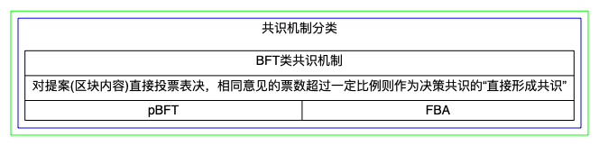

区块链的共识算法
区块链的共识算法
创建时间：2020年2月18日
更新时间：2020年2月26日
作者：ShizhiDeng
更新内容：
2020-02-25
1
重新生成每个算法的总结图，重新整理文章，并发布
2020-02-26
1
2
31. 投票直接形成共识的BFT类
2. 选举代理人间接参与共识的代理类
3. DAG类共识
我的思考（持续更）
节点有相应的概率被选为某个区块的生产者(取得记账权)，在符合一定规则的前提下，由该节点决定区块的内容，再经其 他节点验证。生产合法区块的节点通常可以获得一定的激励。
共识算法：解决一致性问题
共识算法的分类
根据容错，节点参与共识过程的资格，形成共识的依据和共识的内容可以分成四类[^ 1 ]:
- Proof of X类
- 投票直接形成共识的BFT类
- 选举代理人间接参与共识的代理类
- 舍弃传统区块概念的DAG类共识
整体分类图见下：
共识机制的分类标准见下：
4类共识机制简析
- Proof of X类共识机制
节点获得记账权的概率与该节点拥有某种资源的比例相关，并且这种资源是难以垄断的，同时需要一个能够快速验证某个节点确实拥有这部分资源的算法。
该类共识算法有PoW、PoS、PoA/PoSV/Casper、PoST/Proof of Authority：
针对PoX类共识机制，分别对上述几种算法总结如下：
PoW
PoS
PoA
PoA
Casper
Ouroboros
PoSV
其他PoX
投票直接形成共识的BFT类
该类共识算法有pBFT、dBFT和FBA：
pBFT
1999年提出，首个高效解决拜占庭容错问题的算法
Hyperledger Fabric曾采用过此共识算法
解决的问题：分布式系统的一致性问题，拜占庭容错问题。
采用的方法：引入“视图”(View)和“主从节点”(Replica)的概念。 Replica 包括主节点(Primary)以及备份节点(Backups)，主节点通常在每一轮共识过程开始时随机选取或者轮流担任。“视图”表示一次主节点分发请求的过程。
当一轮共识开始时，首先检查主节点的有效性。如果备份节点检测到主节点失效，需要选举出新的主节点，称为“视图更换”。共识过程分为包括预准备、准备、确认阶段，又称“三阶段协议”。

容错能力：pBFT 算法对于一个 n=3f+1 个节点组成的区块链网络，可以提供 f 的容错能力，容错能力近似为 1/3。
pBFT的限制：由于一轮共识过程中节点间的通信次数与𝑛^2^（n为节点数）成正比，考虑到通信延迟的存在，当节点的数量达到一定规模后，pBFT 的效率会严重下降。
FBA（Federated Byzantine Agreement 基于联邦拜占庭协议的共识机制）
- 思想：通过一种在子网络内部形成信 任(即联邦)，将子网络作为整体视为网络的节点的协议。
- 基于FBA的共识机制：基于 FBA 的共识机制有RPCA(瑞波共识机制)、恒星共识机制等。
- 方法：
- RPCA(瑞波共识机制)：节点分验证节点（信任节点列表：UNL Unique Node list）+非验证节点；共识过程分两个阶段：阶段1. 形成交易集的共识（对每一个交易在 UNL 中投票表决，最终得到 80% 投票的交易会被放入交易集中） 阶段2. 形成新区块的共识（广播区块的hash值，比例最高的 Hash值占比超过80%，则达成共识）
- 恒星共识机制：与 RPCA 类似，恒星共识机制的特点是通过节点可以自由地选择要加入的“联邦”，无需中心化的组织预先选出“服务节点”。
- 容错能力：RPCA(瑞波共识机制)为1/5。
选举代理人间接参与共识的代理类
BFT类共识机制的限制：参与共识的节点数量有限制，或者参与共识的部分节点必须是可信任的。
目标：一些公共区块链希望尽可能多的节点参与到共识过程中去。
代理共识机制的思想：借鉴现实社会中的选举，网络定期按照节点的得票数选出一定数量的“共识节点”，仅由共识节点完成区块链网络的共识过程。
限制
- 由于见证人的数量有限并且公开，攻击者想要发动DDoS攻击较为容易，见证人需要额外的保护措施，增加了运行共识节点的成本。
- 具有投票权的节点通常有更大的话语权，甚至可以操纵投票结果。
- 如果限制节点的最高投票权重，也可以通过转移通证到不同的节点来规避。
- 如果实行“一节点一票”的机制，又会导致“女巫攻击”变得可行。
- 寻找一个平衡安全性与非中心化的投票算法是较为困难的。
该类共识算法有DPoS和DPoS-BFT：
DPoS
- 方法：
- 选举见证人：选票前 101 名的节点获得参与网络共识过程的资格，被称为“见证人”。
- 每个见证人按照一定的顺序(比如随机)轮流获得生产区块的机会，再根据一定的规则对区块链达成共识。
- 共识方法：根据类似 PoW 的最长链原则选择在高度最高的区块后添加自己的区块。
- 注意1：各见证人的记账权利是相同的，不因获票数的多少产生区别。
- 注意2：见证人未能履行义 务或作出不符合整体利益的行为，见证人会被取消记账权。
- 方法：
DPoS-BFT
- 思想：见证人根据获得获得权益支持的多少选出，见证人形成共识的算法可以是 BFT 或其他算法。
- 方法：
- EOS 使用的 DPoS-BFT 共识机制方法：
- 股权投票选举出见证人(EOS 称为 BP，Block Producer)的基础上
- 使用 BFT 类算法在 BP 之间形成共识。
- 见证人 21 名，在BFT的三阶段协议中，区块得到15个BP的确认就可最终确认。
- NEO 的方法：主要是对见证人形成共识的BFT类算法进行改进
- NEO 网络中有两种通证，管理通证 NEO 以及燃料通证 GAS。
- 节点根据持有管理通证的份额获得相应数量的选票，选举出一定数量的见证人(共识节点)
- 由见证人通过改进的pBFT 算法形成共识，生产区块
- 区块中会有奖励的燃料通证，按持有 NEO 的比例分配给各节点。
- EOS 使用的 DPoS-BFT 共识机制方法：
DAG类共识
该类共识算法有如下特点：
- 思想：一般节点维护的交易历史是一个区块组成的哈希链表，特点是单向、线性。修改这种数据结构为IOTA 就是采用有向无环图 DAG (Directed Acyclic Graph)作为记录交易历史的数据结构。
- 特点和优势：
- Tangle 共识不需要专门负责记账的矿工，而是由新交易给历史交易提供验证，因此不需要交易费用。
- 不需要将交易打包成区块，交易得到确认的速度取决于新交易 加入Tangle的速度。
- 缺点
- 对交易缺乏过滤机制，因此容易遭到大量垃圾交易的攻击，并且没有有效的机制过滤作恶的节点